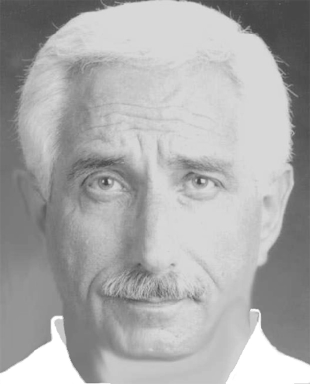

BiographyArnold R Sandubrae Photo taken January, 2009 |
|
Sensei Arnold Sandubrae began his Isshinryu Karate training in 1973, under the instruction of Sensei's Robert L. White, and Sam Santilli, students of Master Willie Adams. Several years later, he transferred to train directly under Master Willie Adams because Master Adams Dojo was located only blocks from Sensei Sandubrae's office. From 1973 until 1986 he amassed over 200 trophies in all categories, Kata, Kumite, Weapons, and Breaking. Sensei Sandubrae has had his own Karate School since 1978. That is when he retired from the business world, and moved to his home in Palm Springs, California. At that time, with the approval of Master Willie Adams, Sensei Sandubrae went under the leadership of Master Harold Long, Ju Dan. Sensei Sandubrae remained his student until Master Long's death in 1998. In June of 2002, Sensei Sandubrae went under the direction of an old time friend and Master instructor, Joel Chandler Ku Dan. Sandubrae remained his student until Master Chandler's death in 2012. For more than 20 years, Sensei Sandubrae donated ALL proceeds directly to the American Heart Association, an organization that he was a Board Member of for 21 years. He has appeared on many National Television shows and Radio programs furthering the art of Isshinryu Karate. For 28 years, Sensei Sandubrae was a Board Member of the prestigious Isshinryu Hall of Fame, and was a Board Member of the Tatsuo-Kan Society. For many years he was a Board Member of the International Isshinryu Karate Association. ( IIKA ) Sensei Sandubrae has traveled, and continues to travel, to many places throughout the world, furthering the art of Isshinryu Karate by both attending and putting on training seminars in other countries. Sensei Sandubrae is the artist of the Bronze Bust presented to the Isshinryu Hall of Fame of Soke Tatsuo Shimabuku, and is the Writer and Producer of the Isshinryu Song. He is also the Author and Publisher of the "Karate Passport" as well as being the Designer and Registered Trademark and Service mark holder of the now Internationally used stylized Isshinryu Fist and Obi. Both, Service and Trademarks are owned solely by Sensei Sandubrae, and when permission is requested to use these Registered Trademarks and Service marks, Sensei Sandubrae considers their use and often gives his consent The following is a partial listing of major awards and honors that have been bestowed upon Sensei Sandubrae since his entry into Isshinryu Karate :
|

760-568-0961
68225 Ramon Road
Cathedral City, CA 92334